December 28 2006 Due to inclement weather, we postponed our Christmas walk on the beach a few days, and were glad we did. We had warm weather, and saw lots of wildlife. Favorite presents last year: automatically resetting alarm clock for Margie, foam "grow new parents" for Erich.
January 4-7 Margie went to New Orleans for the big annual math conference. She and Michael interviewed 20 applicants for a math position. She also bought Erich a Switch Pitch, a ball that changes colors when you throw it! The city itself was eerie. The French Quarter was like always, but many other areas had not yet recovered from Katrina over two years ago.
February 9 Baseball season started again, and the Hatters won their opening game convincingly.
February 22 Erich received an e-mail from a literary agent asking him if he wanted to turn his popular web page What's Special About This Number? into a book.
February 26 In surfing radio stations on the way to work, Erich found two stations playing the same song, the same lyrics at the same time.
February 28 Erich saw six wild turkeys on his drive to work.
March 14 The math majors at Stetson celebrated π day. One of Erich's teeth started hurting because of a sinus infection, and required local anesthetic several times a day. Erich learned some geocachers hid a cache and used his special numbers page for hints. The cache of small prizes was hidden in the hollow of a tree in a parking lot in Texas. And Phillip introduced us to Steve Boros, who came to one of the Stetson baseball games.
March 24 A foul ball at the baseball game bounced into the open window of the press box! A few days later, we saw our first triple play, and we lost the game because of it. Erich did his taxes, the latest ever. Took him 10 minutes and he got a hefty refund.
March 29 Erich called his dentist about a broken wisdom tooth, and walked out of the dentist's office with a new tooth 45 minutes later! And in the ultimate irony, Erich talked with esquire.com, the web site connected with Esquire magazine, about how to pick up women using numbers. The following day, there was a fire drill during Erich's office hours, and he brought a white board outside to continue tutoring a student.
April 12-15 Margie flew to Austin to attend a conference on inquiry-based learning. As usual, she returned full of enthusiasm to redo all of her courses. Both Jimmy Lafave and Marcia Ball were playing in town, but Margie chose to socialize with a small group of fellow conference-goers instead. They walked down South Congress Ave. to window shop, listen to some Texas swing (Redd Volkaert at the Continental Club) and greet the bats. Only a few of the latter stirred themselves, as it was rather cold. The return flight took off late, circled the temporarily closed Orlando airport, missed landing on the first approach, and missed the proper spot to hook up to the jet way at the gate. Well, every pilot has to have a first flight....
May 2 To celebrate the full moon, and Erich's birthday, and the end of the school year, we tried a new restaurant in New Smyrna Beach. The specials of the day were written on an uncooked lasagna noodle. Among Erich's other birthday presents were a chocolate chip cookie for every year Erich has been alive, a laser game, and a cool math book without words.
May 17 We took another canoe trip.
May 21 We drove down to Orlando to play two Disney mini-golf courses, and have lunch at the House of Blues.
June 11 Erich postponed jury duty again, this time due to a repeat of the intestinal issues that plagued him two years ago. And he noticed his odometer was broken.
July 19 Margie buys Erich the Complete Idiot's Guide to Faith.
July 22 We celebrated our 20th anniversary with champagne and a nice Tuscan meal. The next day, Erich had an esophagogastroscopy, his first experience with anesthesia.
July 29 We took another canoe trip. And Erich got word through a German ad agency that a Fortune 500 company was interested in using a puzzle type that he invented in a promotion in Russian airports.
August 2 Erich had a CT scan. A week later he found he has an small aortic aneurysm.
August 5 We made the switch from powder to liquid, but continue to choose paper over plastic.
August 12 We saw a deer, a movie about a shooting star, and a real shooting star all in one day.
August 30 Erich showed up 10 minutes late to a haircut appointment, to find his hairdresser had forgotten about the appointment too. The next day there was a bomb threat at a grocery store in town where we used to shop. And Erich's digestive ailment was finally diagnosed as stress.
September 2 Erich got a letter from his father, the first contact in over 10 years.
September 12 Margie discovered Slaid Cleaves. Her Pandora radio station seeded with Jimmy LaFave and Slaid is her current favorite.
September 16 We took another canoe trip, this time without a camera. Later, we went to the mall, where Erich saw a girl arrested for shoplifting. Erich also got an e-mail from a magazine publisher in India interested in purchasing puzzles for a magazine he is starting up.
September 24 On her usual morning walk, Margie saw a slug.
October 1 One of Erich's students got hit by a truck and broke her leg, necessitating a relocation of that class. And Erich postponed his jury duty again until next summer.
October 11 Erich's puzzle collection reached 1000 puzzles. And Erich used the F-word in class.
November 11 We had lunch with some friends at a restaurant in New Smyrna that had fish swimming in a tube above our heads. And we saw cows on the highway on the way home. And yet another magazine expressed interest in Erich's puzzles.
November 22 We celebrated Thanksgiving with Missy and Barbara. Before dinner, we played Uno Attack, which always makes Margie laugh hysterically. The food, as usual, was scrumptious.
December 1 On our way to sample one last cone from TCBY (we'll miss them!), an idiot pulled into our lane and almost hit us.
December 13 Driving to school to turn in his final grades, Erich had to swerve to avoid a falling branch. On the way home, he passed a lawn mower in the oncoming lane that had fallen out of a pick-up truck. Driving in Florida is always an adventure! And for the first time in 4 years, we put up a tree for the holidays. It was Margie's turn to supervise the decorations, and she chose bubble lights.
December 16 A tornado passed through Orange City, so we spent half an hour sleeping in Erich's closet. And Erich contracts to make 15 puzzles for Brain Games magazine.
We're looking forward to Solstice and Christmas celebrations, our 21st holiday season together. We'll head for the beach for a combination Christmas Eve / Full Moon ritual, and host our annual New Year's Eve party. We would love to hear from you!
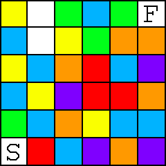
January 19 Erich got a call from Reader's Digest, wanting to know whether he would make a puzzle for them. They originally quoted a price of about a month's salary at Stetson, but later corrected it to a more reasonable week's salary. This color maze was printed in the April issue.
Instructions:
Find a path from Start to Finish that moves horizontally and vertically, passes through each square no more than once, and passes through each non-white color an equal number of times.
January 23 After looking forward to the Indigo Girls concert for 6 weeks, Margie got sick and couldn't go. So Erich, Guen, and Michele met up in Jacksonville for Thai dinner and the show. Erich had never seen so many lesbians in one place before. Maybe he needs to get out more.
January 25 Erich went temporarily insane and did some ironing. February 2 Deland was hit by a tornado. Our secretary Nancy's house was destroyed. We didn't know the extent of the damage until we tried to drive the 7 miles to school, and it took us 90 minutes to get halfway. The traffic eased up enough for us to get to our afternoon classes, though our usual route didn't open until several days later. This picture was taken nearby that morning.
February 4 Erich's hometown team, the Indianapolis Colts, played and won their first Super Bowl. February 13 Erich got an e-mail from Thailand telling him that his puzzles are being used by a Buddhist monk to train teachers to teach gifted students in grade school in Bangkok. In an unrelated incident, at lunch Erich bought tamarind candy, and found actual tamarind pits in the centers.
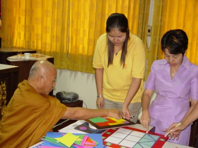
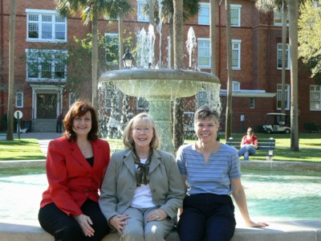
February 14 Margie said goodbye to Phyllis, a good friend from Stetson. She retired and moved to Georgia. She and Lucy will miss her at lunch. Erich finally recovered from a two-week cold enough to have a semi-romantic dinner at a supposedly gourmet coffee/panini/gelato place that we won't be returning to. Erich was called for jury duty, but postponed it until the summer.
February 15 Missy invited us to cruise the St. Johns River with her biology class. It was a little cold for us, but the river was beautiful, as always. The students added many Florida critters to their lists and learned about the ecology of the river. We saw three purple gallinules! Margie had seen only one many years ago, and it was a new bird for Erich. We also saw more yellow-crowned night herons in one tree than Erich had ever seen before. A gator kept a watchful eye on us as we passed.
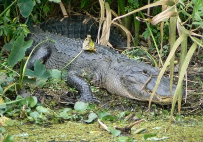
February 18 Margie saw a church sign she liked at the Church o' Deland. We celebrated the Chinese New Year by playing mah jongg and eating Chinese food with friends. Erich learned how to make pot stickers.
March 6 On our spring break, we drove to Cape Canaveral for the day to play and rate another mini-golf course. We had lunch with Lynn, an old friend of Erich that we don't see much any more. After getting back home, we played koi-koi with Barbara. March 9 We took a canoe trip on the St. Johns river starting in Blue Spring State Park. We saw 21 species of birds, and lots of big gators, but the big treat was hearing and spotting a barred owl. You can see some more pictures of our trip here. Deland, which was originally named Persimmon Hollow, celebrated its 125th anniversary. Erich, who is collecting state quarters, found Montana.
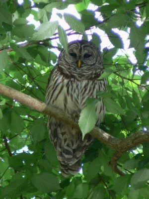
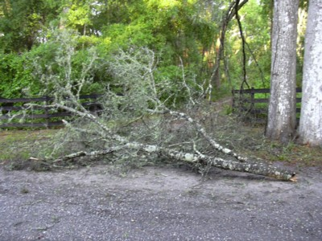
April 4 Margie celebrated another birthday, while we entertained another job candidate. One of Erich's students came to class in a bikini top and a towel. A few days later Erich got to see his first in-the-park home run.
April 11 Erich taught his calculus class outside. And a rainstorm that night brought down an enormous branch which blocked our driveway. We called a handyman with a chain saw to remove it. Our baseball team climbed to 28th in the country, before settling back at a more reasonable level.
April 25-29 We drove down to Ft. Myers Beach for a long weekend between the end of classes and final exams. We saw 29 species of birds on Sanibel Island, plus the usual gators and tree crabs. Erich got sunburned. Margie spent a lot of money shopping. We got to play mini-golf free at a course that Erich had reviewed. At our favorite Thai restaurant, a psychotherapist (emphasis on the psycho) sat at the next table and proceeded to talk about decapitated heads. We visited the southern most winery in the country. We visited a small zoo, and enjoyed the otter frolicking, gator petting, and crane dancing. We also got plastered at the tiki bar. You can find more pictures of the trip here.
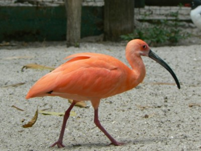
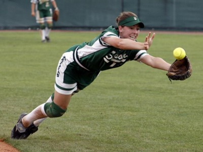
May 10-12 The Stetson softball team entered the conference tournament as the #1 seed and went 5-1 to win our conference championship. Our team might not have won if they hadn't made a great diving catch. We lost to UF and Texas in the regional. A few days earlier, Erich bought an item on e-bay from someone in Deland.
May 23-25 The Stetson baseball team entered the conference tournament as the #1 seed, with Erich attending every home game. But we went 2-2 in the tournament to get a disappointing third place. We earned an automatic bid to the regional, where we lost to Mississippi State (who made it to the College World Series), beat Bethune-Cookman and lost to Florida State.
Instructions:
Eight copies of all but one of the six gray shapes will exactly tile the larger green shape to the right. Which shape will not tile the green shape?
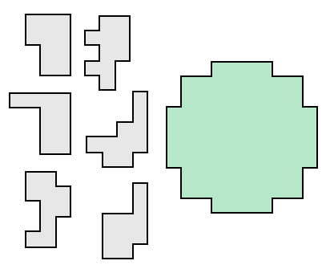
May 26 Erich learned that this puzzle was to be used in the 2007 U. S. Puzzle Championship.
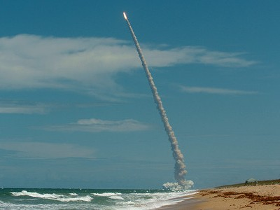
May 27 We drove down to Cocoa Beach to rent wave runners for the first time with Lynn and her boyfriend. We got ours up to 46 mph, and saw a dolphin, but we got soaked! June 8 We went to dinner in New Smyrna Beach and watched the space shuttle launch from the beach.
June 18 Erich received a nude picture of his first lover by e-mail. No, not porn, Kendyl participated in the nude Fremont Solstice Parade (Kendyl is waving at 1:15). June 25 After saving scraps for 42 years, Erich actually bought and constructed a scrapbook. Margie burned the first of many CDs from her aging tape and LP collection. The next day, Erich gave blood for the first time in 24 years, as the doctors tried to diagnose his stomach ailment. And Erich's brother's vacation house in Lake Tahoe burned to the ground.
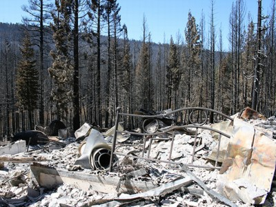
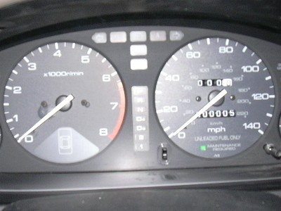
August 6 Blissfully unaware that our grocery store was closed early for cleaning, we collected a cart of food, and they patiently rang us up anyway. A few days later, Erich got his odometer replaced, but the dealership forgot to set his mileage!
September 19 Someone attempted to break into our home. They cut our screen door and gained access to our porch, but couldn't get into our house. October 20 Michele and Guen's annual Halloween party was a big hit. We won best couple costume, mostly because of a lack of competition. The following weekend we went to Lucy's Halloween party. You can see pictures of the costumes here.
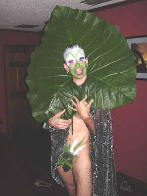
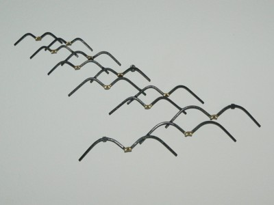
November 7 One of Erich's students memorized 1000 digits of π in a week to win a $10 bet. November 18 We went to the Deland Festival of the Arts, where we saw many friends, heard Sam Pacetti play, bought some avian sculpture made from nails for our foyer wall. Erich won a free drawing for a nature photgraph from a local artist! 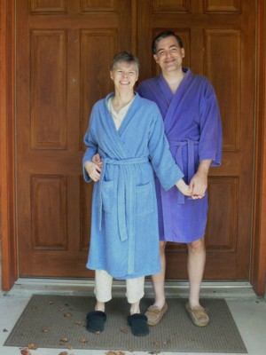 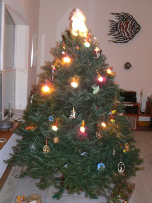